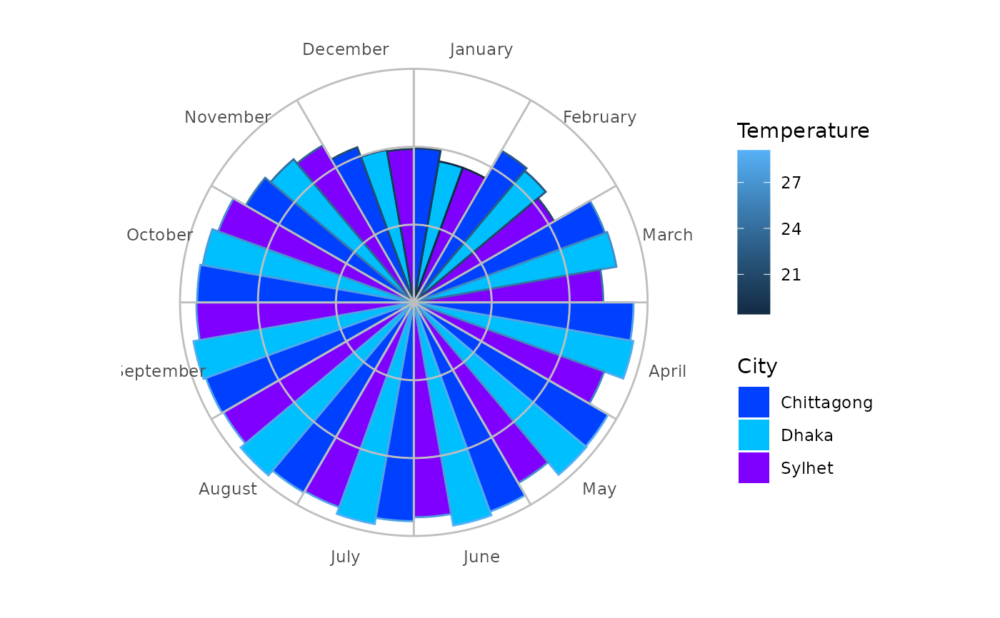

Clyclic Chart
cyclic_chart.RdThis function plots values corresponding to random periods such as hours, days, months and so on.
Arguments
- df
A data frame
- Period
A list of periodical values such as hours of the day, days of the week, months of the year and so on.
- Value
A numeric vector with the values corresponding to the `Period`
- Crit
A factor variable based on which the bars would be colored.
- ColV
A character vector with the list of colors for the bars. You can use this online tool (https://r-charts.com/color-palette-generator/) to create a beautiful color palette.
Examples
dhktmp <- c(18.4, 22.1, 26.4, 28.6, 28.9, 29.1, 28.9, 29.0, 28.7, 27.5, 24.0, 19.9)
syltmp <- c(18.4, 20.8, 24.3, 26.0, 26.8, 27.6, 28.0, 28.2, 27.9, 26.7, 23.3, 19.7)
chttmp <- c(19.8, 22.5, 26.1, 28.2, 28.8, 28.6, 28.1, 28.2, 28.4, 27.8, 24.9, 21.2)
dftmp <- data.frame(Temperature = c(dhktmp, syltmp),
Month = factor(rep(month.name, 2), month.name),
City = rep(c("Dhaka", "Sylhet"), each = 12))
dftm3 <- data.frame(Temperature = c(dhktmp, syltmp, chttmp),
Month = factor(rep(month.name, 3), month.name),
City = rep(c("Dhaka", "Sylhet", "Chittagong"), each = 12))
Col <- c("#bfff00", "#ffff00", "#ffbf00")
cyclic_chart(dftm3, Period = Month, Value = Temperature,
Crit = City, ColV = Col)
